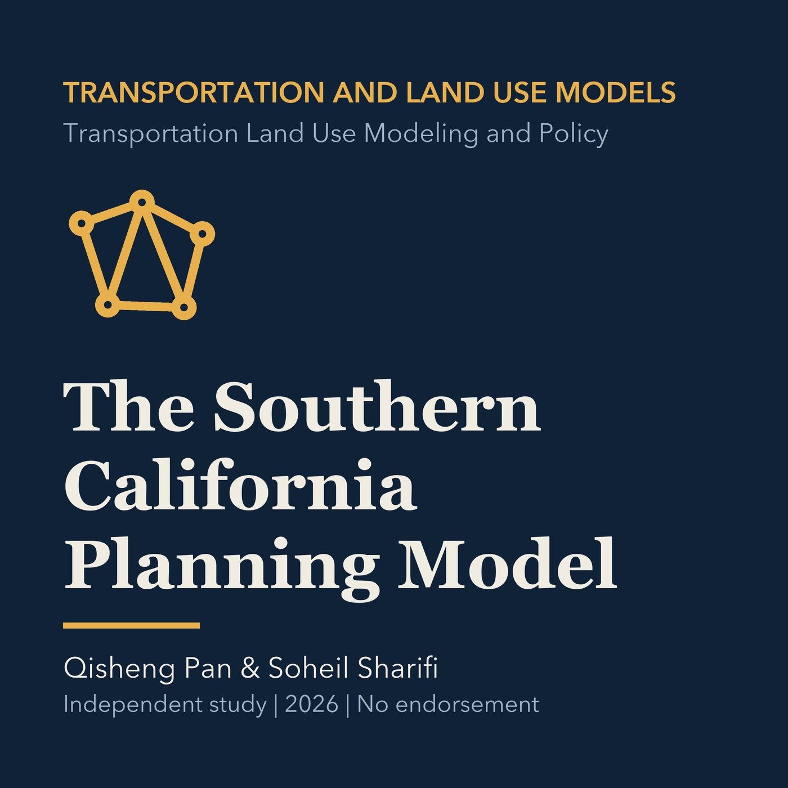

EPISODE 07
The Southern California Planning Model
Studies the regional Southern California Planning Model and scenario uses while distinguishing it from an official Torrance forecast.

- Stable GUID
7b2d4962-5a0a-58ca-b9af-6d8009c99bf9- Release
- transportation-land-use-modeling-v2026.2
- SHA-256
e599c683ca4b439b71ef7ca79f5e2a592662a53fb00f1fe8cd44fecd77df4852